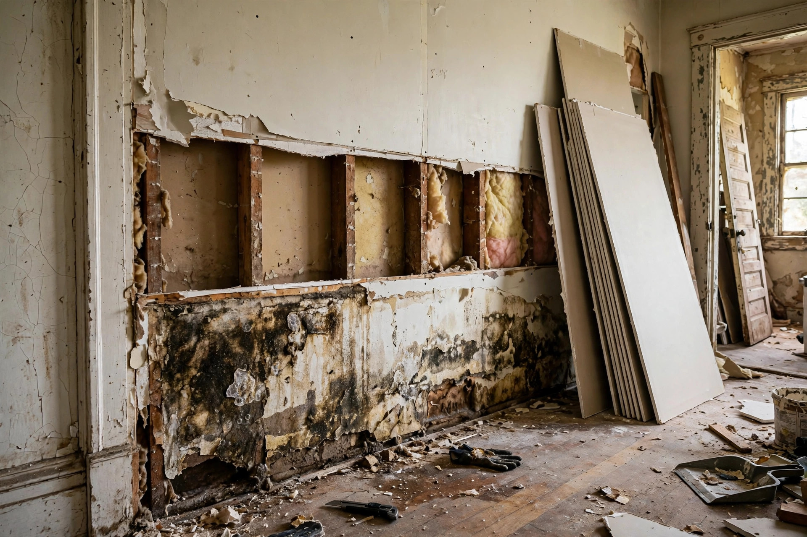

Water Damaged Drywall Repair
Soaked drywall does not recover — it gets cut out, the cavity gets dried, and new board goes up right. Plaster walls assessed with the same care.

What we verify before rebuilding
- Flood cut runs straight and above the full wick line
- Wet insulation is removed — it does not dry in place
- Studs and plates meter at safe moisture content
- The water source is fixed, not just the wall
- New board, tape, texture, and paint complete the job
How the cost breaks down
| Part of the job | What drives it |
|---|---|
| Demolition | Linear feet of wall opened; plaster takes more labor than drywall. |
| Drying | Days of equipment time, based on how saturated the cavity was. |
| Rebuild | New board, tape, texture match, primer, and paint. |
| Source repair | Plumbing or exterior fix billed by scope — always quoted up front. |
Drywall vs. plaster in Caldwell
Modern drywall
Post-1970s homes use gypsum board that wicks water fast and crumbles when soaked. Flood cuts are the standard fix.
Historic plaster
Older Caldwell homes often have plaster over wood lath. Brief wetting may dry out fine; prolonged soaking loosens keys and needs patching.
Mixed walls
Remodeled homes sometimes have both. We treat each section by its material, not with one blanket approach.
A supply line to an upstairs bathroom seeps inside a wall for a month before the downstairs ceiling stains. The wall's lower four feet of drywall is removed in a clean flood cut, the cavity dried for three days, and new board hung, textured, and painted.
Sources: EPA — Mold, Moisture & Your Home · CDC — Mold
Questions, answered plainly
How high do you cut out wet drywall?
Typically a straight flood cut a foot or more above the visible damage line, since wicking climbs higher than the stain. Meters confirm the cut line is dry before rebuilding.
My walls are plaster, not drywall. Can you fix those?
Yes. Many Caldwell historic homes have plaster over lath. Plaster tolerates brief wetting better than drywall, and we assess whether sections can dry in place or need surgical removal.
Will you match the existing texture?
We match orange peel, knockdown, and smooth finishes as closely as possible, then prime and paint the repaired area.
How do you know the studs are dry?
Pin meters read moisture content in the framing before new board goes up. Rebuilding over damp studs traps moisture and invites mold.
Can I stay in the house during the work?
For most drywall repairs, yes. We contain dust with barriers and keep the work area tidy at the end of each day.
Soggy walls? Let's open them up right.
Call for a clear assessment — cut line, drying plan, and rebuild quote before any work starts.
Open 24 hours · Serving Caldwell and Canyon County
Why we cut instead of drying in place
Homeowners often ask why soaked drywall cannot just be dried. Three reasons:
Paper facing feeds mold
Drywall's paper skin is organic. Once wet, it becomes mold food within days — drying the surface does not remove the food source inside.
Hidden insulation stays wet
Fiberglass batts behind the drywall trap water and dry far slower than the wall surface suggests. Meters often show wet insulation behind "dry" walls.
Structural drying needs access
Studs must be verified dry before closing up. A clean flood cut gives the airflow and meter access that drying through intact drywall cannot.
How we protect your home during the work
- Dust barriers seal the work area from living spaces
- Floors covered before any cutting begins
- HEPA-filtered vacuums capture dust at the source
- Daily cleanup — no drywall dust left overnight
- Final walkthrough before we call it done